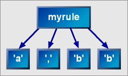
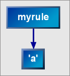
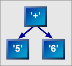
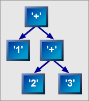

|
|
树 |
 |
 |
 |
解析树是输入在内存中的表示, 其结构符合文法.
使用解析树而非语义动作的优点:
示例
既然你觉得自己可能想使用树, 我将给出一个如何使用它们的示例, 你可以看到它们是多么易用. 那么, 遵循传统(以及本文档其余部分)的做法, 我们来做一个小计算器. 下面是文法:
integer
= token_node_d[ (!ch_p('-') >> +digit_p) ]
;
factor
= integer
| '(' >> expression >> ')'
| ('-' >> factor)
;
term
= factor
>> *( ('*' >> factor)
| ('/' >> factor)
)
;
expression
= term
>> *( ('+' >> term)
| ('-' >> term)
)
;
现在, 你会注意到这个文法唯一的不同是 token_node_d 指令. 它使 integer 规则的匹配最终落入一个节点. 若没有 token_node_d, 每个字符都会有自己的节点. 还要注意 token_node_d 是一个隐式词法元素(这意味着不需要 lexeme_d 来切换到字符层面解析). 很快你会看到, 当所有字符都在一个节点里时, 把输入转换为 int 会更容易. 下面是创建树的解析方式:
tree_parse_info<> info = pt_parse(first, expression);
pt_parse() 与 parse() 类似. 共有四个重载: 两个用于 first 与 last 迭代器对, 两个用于字符串. 其中两个函数接受跳过解析器, 另外两个不接受.
tree_parse_info 结构体包含与 parse_info 结构体相同的信息, 外加一个名为 trees 的额外数据成员. 当解析结束时, trees 将包含解析树.
下面是如何使用树来对输入求值:
if (info.full)
{
cout << "parsing succeeded\n";
cout << "result = " << evaluate(info) << "\n\n";
}
现在你会问, evaluate() 是从哪来的? 它是 spirit 的一部分吗? 遗憾的是, 不是, evaluate() 只是示例的一部分. 如下:
long evaluate(const tree_parse_info<>& info)
{
return eval_expression(info.trees.begin());
}
所以这里你看到 evaluate() 只是调用 eval_expression(), 传入 info.trees 的 begin() 迭代器. 下面是该示例的其余部分:
// Here's some typedefs to simplify things
typedef char const* iterator_t;
typedef tree_match<iterator_t> parse_tree_match_t;
typedef parse_tree_match_t::const_tree_iterator iter_t;
// Here's the function prototypes that we'll use. One function for each
// grammar rule.
long evaluate(const tree_parse_info<>& info);
long eval_expression(iter_t const& i);
long eval_term(iter_t const& i);
long eval_factor(iter_t const& i);
long eval_integer(iter_t const& i);
// i should be pointing to a node created by the expression rule
long eval_expression(iter_t const& i)
{
// first child points to a term, so call eval_term on it
iter_t chi = i->children.begin();
long lhs = eval_term(chi);
for (++chi; chi != i->children.end(); ++chi)
{
// next node points to the operator. The text of the operator is
// stored in value (a vector<char>)
char op = *(chi->value.begin());
++chi;
long rhs = eval_term(chi);
if (op == '+')
lhs += rhs;
else if (op == '-')
lhs -= rhs;
else
assert(0);
}
return lhs;
}
long eval_term(iter_t const& i)
{
// ... see parse_tree_calc1.cpp for complete example
// (it's rather similar to eval_expression() ) ...
}
long eval_factor(iter_t const& i)
{
// ... again, see parse_tree_calc1.cpp if you want all the details ...
}
long eval_integer(iter_t const& i)
{
// use the range constructor for a string
string integer(i->value.begin(), i->value.end());
// convert the string to an integer
return strtol(integer.c_str(), 0, 10);
}
 完整源代码可 在此查看. 它是 Spirit 发行包的一部分.
完整源代码可 在此查看. 它是 Spirit 发行包的一部分.
那么, 你喜欢所看到的东西, 但也许你觉得解析树太难处理? 再加上几条指令, 你就可以生成抽象语法树(ast), 并把求值代码量至少削减 50%. 所以不再耽搁, 下面是 ast 计算器文法:
integer
= leaf_node_d[ (!ch_p('-') >> +digit_p) ]
;
factor
= integer
| inner_node_d[ch_p('(') >> expression >> ch_p(')')]
| (root_node_d[ch_p('-')] >> factor)
;
term
= factor
>> *( (root_node_d[ch_p('*')] >> factor)
| (root_node_d[ch_p('/')] >> factor)
)
;
expression
= term
>> *( (root_node_d[ch_p('+')] >> term)
| (root_node_d[ch_p('-')] >> term)
)
;
与解析树文法的差异用 粗体红色标出. inner_node_d 指令使被包围解析器生成的第一个和最后一个节点被丢弃, 因为在求值表达式时我们并不真正关心圆括号. root_node_d 指令是 ast 生成的关键. 由 root_node_d 内部解析器生成的节点被标记为根节点. 当创建一个根节点时, 它成为同一规则生成的其他节点的根或父节点.
要开始解析并生成 ast, 必须使用 ast_parse 函数, 它们与 pt_parse 函数类似.
tree_parse_info<> info = ast_parse(first, expression);
下面是 eval_expression 函数(注意, 处理 ast 我们只需要一个函数, 而不是四个):
long eval_expression(iter_t const& i)
{
if (i->value.id() == parser_id(&integer))
{
// convert string to integer
string integer(i->value.begin(), i->value.end());
return strtol(integer.c_str(), 0, 10);
}
else if (i->value.id() == parser_id(&factor))
{
// factor can only be unary minus
return - eval_expression(i->children.begin());
}
else if (i->value.id() == parser_id(&term))
{
if (*i->value.begin() == '*')
{
return eval_expression(i->children.begin()) *
eval_expression(i->children.begin()+1);
}
else if (*i->value.begin() == '/')
{
return eval_expression(i->children.begin()) /
eval_expression(i->children.begin()+1);
}
}
else if (i->value.id() == parser_id(&expression))
{
if (*i->value.begin() == '+')
{
return eval_expression(i->children.begin()) +
eval_expression(i->children.begin()+1);
}
else if (*i->value.begin() == '-')
{
return eval_expression(i->children.begin()) -
eval_expression(i->children.begin()+1);
}
}
return 0;
}
 完整可运行的示例是 ast_calc.cpp. 希望这个示例足以勾起你对树的胃口. 更多细枝末节, 请继续阅读本章其余部分.
完整可运行的示例是 ast_calc.cpp. 希望这个示例足以勾起你对树的胃口. 更多细枝末节, 请继续阅读本章其余部分.
要创建解析树, 可以调用以下五个自由函数之一:
template <typename FactoryT, typename IteratorT, typename ParserT, typename SkipT>
tree_parse_info<IteratorT, FactoryT>
pt_parse(
IteratorT const& first_,
IteratorT const& last_,
parser<ParserT> const& parser,
SkipT const& skip_, FactoryT const & factory_ = FactoryT());
template <typename IteratorT, typename ParserT, typename SkipT>
tree_parse_info<IteratorT>
pt_parse(
IteratorT const& first_,
IteratorT const& last_,
parser<ParserT> const& parser,
SkipT const& skip_);
template <typename IteratorT, typename ParserT>
tree_parse_info<IteratorT>
pt_parse(
IteratorT const& first_,
IteratorT const& last_,
parser<ParserT> const& parser);
template <typename CharT, typename ParserT, typename SkipT>
tree_parse_info<CharT const*>
pt_parse(
CharT const* str,
parser<ParserT> const& parser,
SkipT const& skip);
template <typename CharT, typename ParserT>
tree_parse_info<CharT const*>
pt_parse(
CharT const* str,
parser<ParserT> const& parser);
要创建抽象语法树(简称 ast), 可以调用以下五个自由函数之一:
template <typename FactoryT, typename IteratorT, typename ParserT, typename SkipT>
tree_parse_info<IteratorT, FactoryT>
ast_parse(
IteratorT const& first_,
IteratorT const& last_,
parser<ParserT> const& parser,
SkipT const& skip_, FactoryT const & factory_ = FactoryT());
template <typename IteratorT, typename ParserT, typename SkipT>
tree_parse_info<IteratorT>
ast_parse(
IteratorT const& first_,
IteratorT const& last_,
parser<ParserT> const& parser,
SkipT const& skip_);
template <typename IteratorT, typename ParserT>
tree_parse_info<IteratorT>
ast_parse(
IteratorT const& first_,
IteratorT const& last,
parser<ParserT> const& parser);
template <typename CharT, typename ParserT, typename SkipT>
tree_parse_info<CharT const*>
ast_parse(
CharT const* str,
parser<ParserT> const& parser,
SkipT const& skip);
template <typename CharT, typename ParserT>
tree_parse_info<CharT const*>
ast_parse(
CharT const* str,
parser<ParserT> const& parser);
由 pt_parse 与 ast_parse 返回的 tree_parse_info 结构体包含关于解析的信息:
template <typename IteratorT = char const*>
struct tree_parse_info
{
IteratorT stop;
bool match;
bool full;
std::size_t length;
typename tree_match<IteratorT>::container_t trees;
};
| tree_parse_info | |||||||||
| stop | 指向最终解析位置(即解析处理输入到此处). | ||||||||
| match | 解析成功时为 true. 这可以是完全的(解析器消耗了全部输入), 也可以是部分的(解析器只消耗了输入的一部分). | ||||||||
| full | 当获得完全匹配时为 true(解析器消耗了全部输入时). | ||||||||
| length | 解析器消耗的字符数. 仅当我们有成功匹配(部分或完全)时该值才有效. | ||||||||
| trees | 包含树的根节点. | ||||||||
当 Spirit 生成树时, 解析器的 parse() 成员函数将返回 tree_match 对象, 而非 match 对象. tree_match 有三个模板参数. 第一个是迭代器类型, 默认为 char const*. 第二个是节点工厂, 默认为 node_val_data_factory. 第三个是存储在匹配中的属性类型. tree_match 有一个成员变量, 它是一个容器(一个 std::vector), 名为 trees, 其中存放 tree_node 对象. 出于效率考虑, 当 tree_match 被拷贝时, 树不会被拷贝, 它们被移动到新对象, 而源对象留下一个空的树容器. tree_match 支持与 match 类相同的接口: 它有一个 operator bool(), 因此你可以测试它是否成功匹配: if (matched); 并且可以通过 length() 函数查询匹配长度. 该类具有如下接口:
template <typename IteratorT = char const*, typename NodeFactoryT = node_val_data_factory<> >
struct tree_match
{
typedef typename NodeFactoryT::template factory<IteratorT> node_factory_t;
typedef typename node_factory_t::node_t parse_node_t;
typedef tree_node<parse_node_t> node_t;
typedef typename node_t::children_t container_t;
typedef typename container_t::iterator tree_iterator;
typedef typename container_t::const_iterator const_tree_iterator;
tree_match();
tree_match(std::size_t length, parse_node_t const& n);
tree_match(tree_match const& x);
explicit tree_match(match const& x);
tree_match& operator=(tree_match const& x);
void swap(tree_match& x);
operator bool() const;
int length() const;
container_t trees;
};
当解析成功完成时, trees 数据成员将包含树的根节点.
你可能会问, 那为什么它是 vector? 答案是, 部分是出于实现目的; 另外, 如果你的文法中不使用任何规则, 那么 trees 将包含一个没有任何子节点的节点序列. |
让 spirit 创建一棵树与普通解析的做法类似:
tree_match<> hit = expression.parse(tree_scanner);
if (hit)
process_tree_root(hit.trees[0]); // do something with the tree
通过调用 pt_parse 或 ast_parse创建了树之后, 你就有了一个包含树根节点的 tree_parse_info, 现在你需要对树做点什么. tree_parse_info 的数据成员 trees 是一个 std::vector<tree_node>. tree_node 提供树结构. 该类有一个名为 T 的模板参数. tree_node 包含一个类型为 T 的实例. 它还包含一个 std::vector<tree_node<T> >, 即该节点的子节点. 该类看起来像这样:
template <typename T>
struct tree_node
{
typedef T parse_node_t;
typedef std::vector<tree_node<T> > children_t;
typedef typename children_t::iterator tree_iterator;
typedef typename children_t::const_iterator const_tree_iterator;
T value;
children_t children;
tree_node();
explicit tree_node(T const& v);
tree_node(T const& v, children_t const& c);
void swap(tree_node<T>& x);
};
这个类只是用来把树框架与存储在树中的数据分开. 它是一个通用节点, 任何类型都可以存储在其中, 并通过数据成员 value 访问. T 的默认类型是 node_val_data.
node_val_data 类包含每个节点的实际信息. 这包括被解析的文本或记号序列, 一个指示哪条规则创建了该节点的 id, 一个指示该节点是否被标记为根节点的布尔标志, 以及一个可选的用户指定值. 其接口如下:
template <typename IteratorT = char const*, typename ValueT = nil_t>
struct node_val_data
{
typedef typename std::iterator_traits<IteratorT>::value_type value_type;
typedef std::vector<value_type> container_t;
typedef typename container_t::iterator iterator_t;
typedef typename container_t::const_iterator const_iterator_t;
node_val_data();
node_val_data(IteratorT const& _first, IteratorT const& _last);
template <typename IteratorT2>
node_val_data(IteratorT2 const& _first, IteratorT2 const& _last);
void swap(node_val_data& x);
container_t::iterator begin();
container_t::const_iterator begin() const;
container_t::iterator end();
container_t::const_iterator end() const;
bool is_root() const;
void is_root(bool b);
parser_id id() const;
void id(parser_id r);
ValueT const& value() const;
void value(ValueT const& v);
};
若一个节点由规则生成, 它会带有一个已设置的 id. 每条规则有一个 id, 它会为该规则生成的所有节点设置. id 的类型为 parser_id. 每条规则的默认 id 被设为该规则的地址(转换为整数). 这并不总是最方便的, 因为处理树的代码可能无法访问规则, 也可能无法比较地址. 因此, 你可以通过 给它一个特定的 ID来覆盖每条规则使用的默认 id. 然后, 在处理树时, 你可以调用 node_val_data::id() 来查看是哪条规则创建了该节点.
树由规则组织. 每条规则在树中创建一个新层. 挂接到规则的所有解析器在成功匹配时都会创建一个节点. 这些节点成为由该规则创建的节点的子节点. 因此, 下面的代码:
rule_t myrule = ch_p('a') >> ',' >> *ch_p('b');
char const* input = "a,bb";
scanner_t scanner(input, input + strlen(input));
tree_match<> m = myrule.parse(scanner);
执行时, 这段代码将返回一个 tree_match, m. m.trees[0] 将包含一棵如下的树:
 |
根节点不会包含任何文本, 其 id 被设为 myrule 的地址. 它将有四个子节点. 每个子节点的 id 都被设为 myrule 的地址, 会包含图中所示的文本, 并且没有子节点.
调用 ast_parse时, 树的生成方式有所不同. 它大体上与生成解析树时的工作方式相同. 区别出现在一条规则只生成一个子节点的时候. ast_parse不会创建新的一层, 而是直接保留现有节点. 因此, 这段代码:
rule_t myrule = ch_p('a');
char const* input = "a";
ast_scanner_t scanner(input, input+strlen(input));
tree_match<> m = myrule.parse(scanner);
将生成一个包含 'a' 的单一节点. 若使用的是 tree_match_policy 而不是 ast_match_policy, 树看起来会是这样的:
 |
ast_match_policy 的效果是消除那些仅仅作为传递通道的中间规则层. 这还不足以生成抽象语法树, 还需要 root_node_d. root_node_d将在稍后解释.
如果你想在应用程序中混搭解析树与 ast 行为, 可以使用 gen_pt_node_d[] 与 gen_ast_node_d[] 指令. 当解析穿过 gen_pt_node_d 指令时, 解析树创建行为被开启. 当使用 gen_ast_node_d 指令时, 被包围的解析器将按 ast 行为生成树. 注意, 如果你在这些指令内部使用规则, 必须留意规则的声明方式. 扫描器的匹配策略必须与期望的行为一致. 若你避免使用规则而使用原语解析器或文法, 那么你不会遇到问题.
还有一些其他指令可用于控制树的生成. 这些指令只影响树的生成. 除此之外它们没有任何作用.
该指令与 gen_pt_node_d 和 gen_ast_node_d 类似, 它修改被包围解析器使用的扫描器匹配策略. 顾名思义, 它不做任何树的生成, 完全关闭树生成. 若文法中有树中并不需要的部分, 这会很有用. 例如: 关键字, 运算符(*, -, && 等). 把它们从树中剔除后, 内存使用与解析时间都可以降低. 该指令对规则的要求与 gen_pt_node_d 和 gen_ast_node_d 相同. no_node_d[] 的用法示例见示例文件 xml_grammar.hpp(位于 libs/spirit/example/application/xml 目录).
该指令的目的与 no_node_d 类似, 但工作方式不同. 它不切换扫描器的匹配策略, 因此被包围的解析器仍会生成节点. 生成的节点会被丢弃, 不会出现在树中. 使用 discard_node_d 比 no_node_d 慢, 但它没有这样的缺点: 不必为其内部的任何规则指定不同的规则类型.
leaf_node_t 与 token_node_d 的工作方式相同. 它们为被包围解析器生成的匹配创建一个单一节点. 与 Spirit 的早期版本不同, 该指令是一个隐式词法元素, 会改变扫描器(见 Scanner Business).
该指令把被包围解析器生成的所有节点归组在一起. 在 Spirit 的早期版本中, leaf_node_d 与 token_node_d 就是这样实现的. 这些指令的新实现要快得多, 因此 reduced_node_d 主要是为可移植性而提供的, 在使用自定义节点工厂时可能有用(见下文的高级树生成).
这对从列表中移除分隔符很有用. 它丢弃所有偶数位置上的节点. 因此, 这条规则:
rule_t intlist = infix_node_d[ integer >> *(',' >> integer) ];
会丢弃所有逗号节点, 保留所有整数节点.
它丢弃生成的第一个节点.
它丢弃生成的最后一个节点.
它丢弃生成的第一个和最后一个节点.
root_node_d 指令用于辅助 ast 生成. 在生成解析树时它没有任何作用. 当解析器被包围在 root_node_d 中时, 它生成的节点被标记为根. 这会影响该节点被加入正在生成的节点列表时的处理方式. 下面是一个示例:
rule_t add = integer >> *(root_node_d[ ch_p('+') ] >> integer);
解析 5+6 时将生成如下树:
 |
解析 1+2+3 时将生成如下内容:
 |
创建新节点时, 将使用以下规则来确定树的生成方式:
Let a be the previously generated node.
Let b be the new node.
If b is a root node then
b's children become a + b's previous children.
a is the new first child of b.
else if a is a root node and b is not, then
b becomes the last child of a.
else
a and b become siblings.当解析离开当前规则后, 顶层节点上的根节点标志会被关闭. 这意味着 root_node_d 指令只影响当前规则.
 示例 ast_calc.cpp 演示了 root_node_d 与 ast_parse 的用法. 完整源代码可 在此查看. 它是 Spirit 发行包的一部分.
示例 ast_calc.cpp 演示了 root_node_d 与 ast_parse 的用法. 完整源代码可 在此查看. 它是 Spirit 发行包的一部分.
parse_tree_iterator 类允许你使用 spirit 解析一棵树. 该类按创建顺序遍历叶节点中的记号. parse_tree_iterator 以 ParseTreeMatchT 为模板参数. 它用一个树的容器和一个起始位置构造. 下面是一个用法示例:
rule_t myrule = ch_p('a');
char const* input = "a";
// generate parse tree
tree_parse_info<> i = pt_parse(input, myrule);
typedef parse_tree_iterator<tree_match<> > parse_tree_iterator_t;
// create a first and last iterator to work off the tree
parse_tree_iterator_t first(i.trees, i.trees.begin());
parse_tree_iterator_t last;
// parse the tree
rule<parse_tree_iterator_t> tree_parser =...
tree_parser.parse(first, last);
node_val_data 可以包含一个值. 默认情况下它包含 void_t, 即一个空类. 你可以用模板参数指定类型, 它随后会被存储在每个节点中. 该类型必须是可默认构造且可赋值的. 你可以用以下方式获取和设置该值
ValueT node_val_data::value;
以及
void node_val_data::value(Value const& value);
要指定值类型, 必须使用不同于默认值的 node_val_data 工厂. 下面的示例展示了如何修改工厂, 以在每个 node_val_data 中存储和检索一个 double.
typedef node_val_data_factory<double> factory_t;
my_grammar gram;
my_skip_grammar skip;
tree_parse_info<iterator_t, factory_t> i =
ast_parse<factory_t>(first, last, gram, skip);
// access the double in the root node
double d = i.trees.begin()->value;
现在你可能会想, "既然可以把一个值存进每个节点, 却没有任何设置它的办法, 那有什么用?" 嗯, 这正是 access_node_d 的用武之地. access_node_d 是一个指令. 它允许你向它挂接一个动作, 像这样:
access_node_d[...some parsers...][my_action()]
被挂接的动作会收到 3 个参数: 对解析器生成的树根节点的引用, 以及当前的 first 与 last 迭代器. 该动作可以设置存储在节点中的值.
通过设置工厂, 你可以控制创建何种类型的节点以及如何创建. 有 3 个预定义工厂: node_val_data_factory, node_all_val_data_factory 和 node_iter_data_factory. 你也可以创建自己的工厂来支持自己的节点类型.
在文法中使用工厂相当容易, 只需把工厂类型作为显式模板参数传给自由 ast_parse 函数:
typedef node_iter_data_factory<int> factory_t;
my_grammar gram;
my_skip_grammar skip;
tree_parse_info<iterator_t, factory_t> i =
ast_parse<factory_t>(first, last, gram, skip);
不过, 直接在规则中使用工厂则稍难一些, 因为工厂是扫描器匹配策略的模板参数, 所以你必须使用自定义扫描器:
typedef spirit::void_t value_t;
typedef node_val_data_factory<value_t> factory_t;
typedef tree_match<iterator_t, factory_t> match_t;
typedef ast_match_policy<iterator_t, factory_t> match_policy_t;
typedef scanner<iterator_t,scanner_policies<iter_policy_t,match_policy_t>>scanner_t;
typedef rule<scanner_t> rule_t;
rule_t r =...;scanner_t scan = scanner_t(first, last);match_t hit = r.parse(scan);
这是默认工厂. 它创建 node_val_data 节点. 叶节点包含被匹配文本的一份拷贝, 而中间节点不包含. node_val_data_factory 有一个模板参数: ValueT. ValueT 指定将存储在 node_val_data 中的值的类型.
该工厂同样创建 node_val_data. 它与 node_val_data_factory 的区别在于: 每个节点都包含横跨它的全部文本. 这意味着根节点将包含整个被解析输入序列的一份拷贝. node_all_val_data_factory 有一个模板参数: ValueT. ValueT 指定将存储在 node_val_data 中的值的类型.
该工厂创建 parse_tree_iter_node. 这种节点存储指向输入序列的迭代器, 而不是制作拷贝. 它可以使用少得多的内存. 然而, 输入序列必须在树的整个生存期内保持有效, 并且在这种节点类型上使用 multi_pass 迭代器不是个好主意. 树的所有层都将包含一个 begin 和 end 迭代器. node_iter_data_factory 有一个模板参数: ValueT. ValueT 指定将存储在 node_val_data 中的值的类型.
你可以创建自己的工厂. 它应当看起来像这样:
class my_factory
{
public:
// This inner class is so that the factory can simulate
// a template template parameter
template <typename IteratorT>
class factory
{
public:
// This is your node type
typedef my_node_type node_t;
static node_t create_node(
IteratorT const& first, IteratorT const& last, bool is_leaf_node)
{
// create a node and return it.
}
// This function is used by the reduced_node directive.
// If you don't use it, then you can leave this function
// unimplemented.
template <typename ContainerT>
static node_t group_nodes(ContainerT const& nodes)
{
// Group all the nodes into one and return it.
}
};
};
// Typedefs to use my_factory
typedef my_factory factory_t;
typedef tree_match<iterator_t, factory_t> match_t;
typedef tree_match_policy<iterator_t, factory_t> match_policy_t;
// Typedefs if you are using rules instead of grammarstypedef scanner<iterator_t,scanner_policies<iter_policy_t,match_policy_t>>scanner_t;
typedef rule<scanner_t> rule_t;
|
|
|
Copyright © 2001-2002 Daniel C. Nuffer
Revised 2007 Copyright © Tobias Schwinger
使用、修改与分发受 Boost 软件许可 1.0 版(Boost Software License, Version 1.0)约束. (随附文件 LICENSE_1_0.txt 或复制于 http://www.boost.org/LICENSE_1_0.txt)